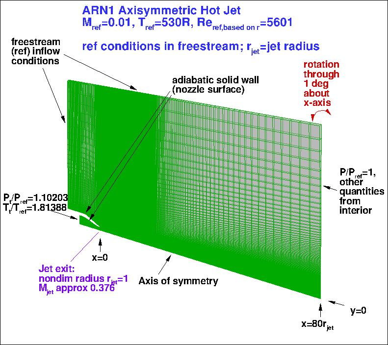
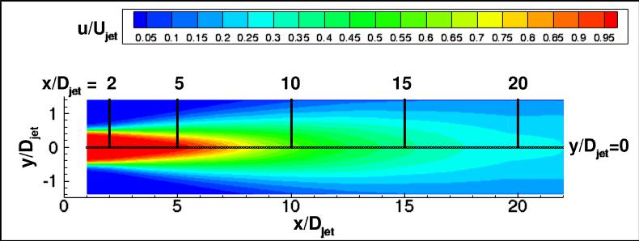
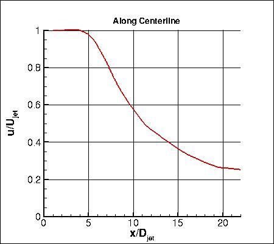
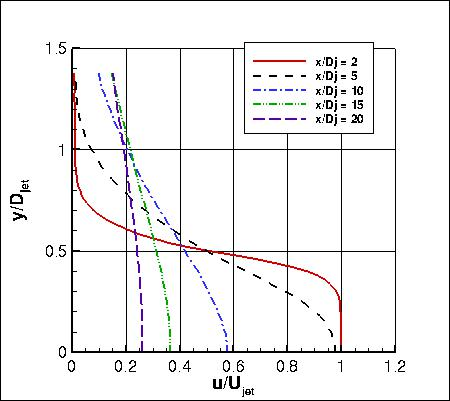
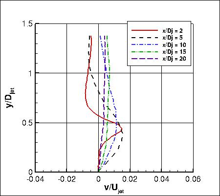
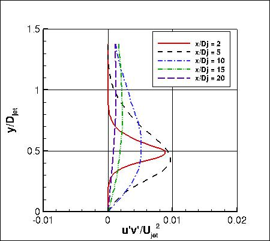
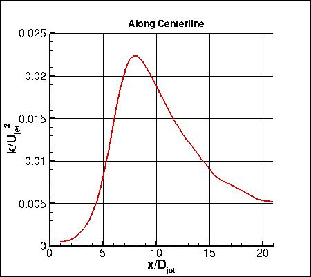
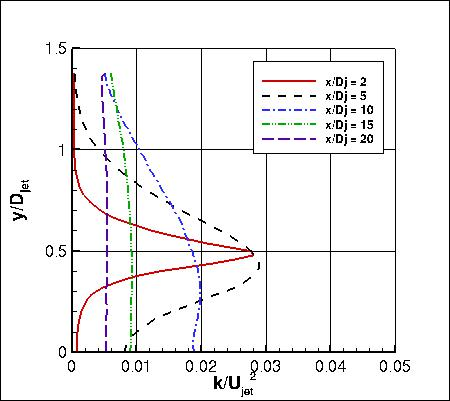

Public Access (formerly Langley Research Center)Turbulence Modeling Resource |
Return to: Turbulence Modeling Resource Home Page
AHSJ: Axisymmetric Hot Subsonic Jet
See the related
subsonic jet and
near sonic jet cases.
The purpose here is to provide a
validation case for turbulence models. Unlike verification, which seeks to
establish that a model has been implemented correctly, validation compares
CFD results against data in an effort to establish a model's ability to
reproduce physics. A large sequence of nested grids of the same family are
provided here if desired. Data are also provided for comparison. For this
particular subsonic hot jet case, the data are from experiment.
The experiment involved a jet (Acoustic Research Nozzle 2, or ARN2), with radius 1 inch (25.4 mm).
The jet exit Mach number for the particular case here is approximately
Mjet=ujet/ajet=0.376, whereas
the "acoustic Mach number" ujet/aref is approximately 0.5.
In the experiment, the axisymmetric jet exits into quiescent (non-moving) air. However, because flow into
quiescent air is difficult to achieve for some CFD codes, here the CFD is computed with a very low
background ambient conditions
(Mref=0.01, moving left-to-right, in the same direction as the jet).
This boundary condition difference has some effect, but testing for a related
"cold" subsonic jet
has indicated that the influence is
relatively small,
and Mref=0.01 represents a reasonable compromise.
The appropriate jet conditions are achieved by setting total pressure and temperature at
the inflow face within the jet, as shown in the figure.
It is important to note that this axisymmetric case is not a 2-D computation; it uses a
periodic (rotated) grid system with appropriate boundary conditions on the periodic sides of the grid.
Note also that a grid with significantly larger domain (1.5 times larger radial extent and twice the
distance upstream) was also run, and yielded CFD results that were almost the same as runs on
the current grid provided.

The experiment yielded measured velocities as well as turbulence quantities downstream of the jet exit using
PIV. Velocity and turbulence profiles of interest are chosen at the centerline (y=0) as well as at the following x-locations:
x/Djet=2, 5, 10, 15, and 20 (where Djet=jet exit diameter). See first plot below for visualization of these locations.
The experimental data references are:
This case is "Set Point 23" from the latter reference. Note that in Table 1 of the reference, the jet static temperature divided by freestream static temperature
is listed. The inflow jet BC in the figure above gives total temperature relative to freestream static instead.







The experimental data are provided here (note that k=(u'u'+v'v'+w'w')/2):
For those interested, the entire set of Bridges and Wernet consensus jet data from NASA/TM-2011-216807 is provided here:
What to Expect:
(Other turbulence model results may be added in the future.)
Note that the OVERFLOW code has documented its results for this validation case (for the SA-noft2 and SST-V
turbulence models) in NAS Technical Paper 2016-01 (pdf file)
(18.3 MB) by Jespersen, Pulliam, and Childs.
Return to: Turbulence Modeling Resource Home Page
Recent significant updates:
RESULTS
LINK TO EQUATIONS
MRR Level
SA
SA eqns
4
SST-Vm
SST-Vm eqns
3
08/28/2020 - changed SST-V naming to SST-Vm
12/07/2015 - fixed typo: the experiment was based on ARN2 with nozzle radius 1 inch, not ARN1 with nozzle diameter 1 inch
Page Curators: Christopher Rumsey,
Ethan Vogel,
Clark Pederson
Last Updated: 11/12/2021